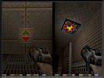
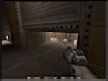
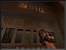

| TCM Intel Brief • Operation Alien Overlord • Military Objectives • The Stroggos
Environment Structural Systems • Environmental Hazards • Arsenal • Military Supplies |
||
Structural Systems |
||
| Buttons, Floorplates, and Levers: There are three ways to activate a switch. Touch it, walk on it, or shoot it. |  | |
| Doors: The majority of doors on Stroggos open as you approach them. If one doesn’t open automatically, seek a button, floorplate, or key. |  |
|
| Secret Doors: Some secret doors conceal secret passageways or military supplies. Most secret doors open when shot. Others open by activating floorplates, buttons, or levers. |  | |
Area Doors: Specific symbols indicate the exit to a given area. |
 |
|
| End of Unit Complex Symbol: The Strogg marked off areas to indicate a one way passage. Once you leave a unit complex you cannot return. |  | |
Secret Areas: The Strogg have concealed military supplies in different locations within the city. Recon your surroundings closely. Sometimes the slightest variation in the environment could mark the entrance of a secret area. There is no visual data available on actually where the secrets are. Use your eyes soldier! |
||